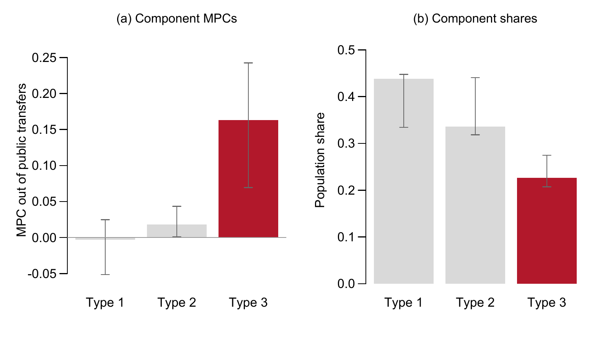
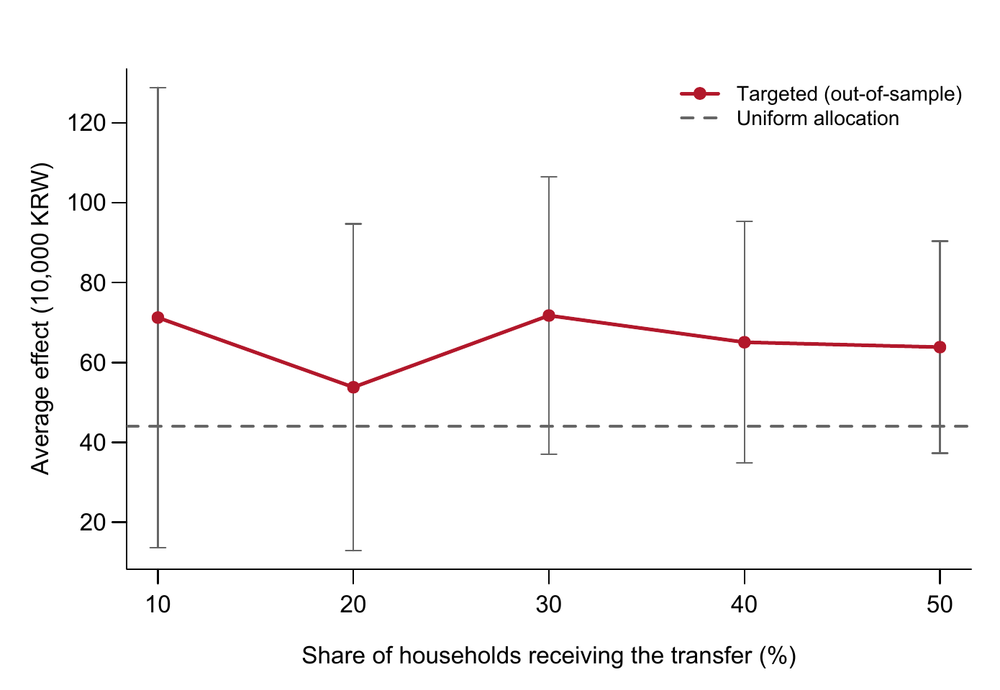

The Distribution of Spending Out of Cash Transfers
How the marginal propensity to consume is spread across Korean households, how much of that spread observable characteristics can explain, and what follows for targeting
한국어판 — 현금 이전소득 소비반응의 분포
Survey data cover the 2012–2025 waves of the public-use Survey of Household Finances and Living Conditions. Income and expenditure refer to the calendar year before each wave, so the 2020 and 2021 transfers appear in the 2021 and 2022 waves.
How much of a cash transfer is spent, and by whom?
Korea paid a universal cash transfer to every household in May 2020 and a means-tested one to the bottom 88 percent in September 2021. The debate over those two designs rests on a premise that is rarely tested directly: that the households who spend more of a transfer can be picked out in advance from information an administrator actually has. Showing that low-income households respond more on average establishes that responses differ. It does not establish that a targeting rule can find the high responders.
This study separates the two questions using fourteen linked waves of the Survey of Household Finances and Living Conditions — 132,965 household-year first differences on 45,241 households. It asks what the data can say about the average response, estimates how responses are distributed across households, and then measures how much of that distribution observable characteristics account for. The clearest finding is that roughly a quarter of households produce most of the aggregate response, and that income, wealth, liquidity, debt and demographics together explain between six and ten percent of who they are.
Headline figures
| Item | Value |
|---|---|
| Estimation sample | 132,965 household-years |
| Average MPC across six estimators | 0.032–0.107 |
| High-response type, share of households | 23% |
| High-response type, MPC out of transfers | 0.163 |
| Variation in household MPCs explained by observables | 5.6–9.7% |
| Consumption response per household, learned rule vs. universal transfer | KRW 409,000 vs. 482,000 |
1. The pandemic transfers do not provide a natural experiment in these data
The 2020 payment rose with household size and was capped at four members: KRW 400,000 for a single person, rising to 1 million for four or more. The 2021 payment was KRW 250,000 per person, uncapped, for households in the bottom 88 percent of the health-insurance premium distribution. Both reached almost every household the survey records.

Two designs built on the programmes were attempted. Both fail, and the reasons can be quantified.
| Design | First stage | Why it fails |
|---|---|---|
| 2020 household-size schedule as an instrument | Coefficient 2.67, F = 287 | A coefficient above one means household size proxies for a bundle of pandemic-era transfers; two-stage least squares returns an MPC of 1.53 |
| Reversal between the 2020 and 2021 schedules | Coefficient 1.16, F = 146 | The minimum detectable MPC is 0.48, and pre-programme coefficients are as large as the treatment-year coefficient |
The instrument violates its exclusion restriction. Household size affects consumption growth directly through the life cycle, and a childcare voucher programme operating in 2020 was also keyed to household composition. The reversal design is cleaner in principle, since households of five or more received relatively less in 2020 and relatively more in 2021. But the standard deviation of the annual consumption change, KRW 7.88 million, dwarfs that of the scheduled amount, KRW 282,000, and every plausible value of the MPC lies below the detectable threshold.

These are properties of the data rather than of the implementation: annual frequency, a transfer small relative to annual consumption, universal coverage, and coincidence with an aggregate shock that was itself correlated with household size. Everything that follows is a partial association conditional on predetermined characteristics, not a causal estimate from a natural experiment.
2. The average MPC turns on a single control and on the estimator
The baseline specification is estimated in first differences:
\[\Delta C_{it} = \alpha_t + \beta\,\Delta T_{it} + \gamma\,\Delta Y_{it} + X_{i,t-1}'\delta + \varepsilon_{it}\]
Here \(\Delta C\) is the change in annual consumption, \(\Delta T\) the change in public transfer income, \(\Delta Y\) the change in all other income, and \(X_{i,t-1}\) twenty characteristics measured in the previous wave. Every covariate is lagged, because a contemporaneous one — the debt-service ratio of a household that used the transfer to repay debt, for instance — is itself an outcome of the transfer.
Omitting \(\Delta Y\) moves the estimate across zero. Without it the coefficient on transfers is −0.004; with it, +0.048. Transfers rise when other income falls, with a correlation of −0.164, which is what unemployment benefits, means-tested support and pensions are designed to do. A regression of consumption on transfers alone loads that negative co-movement onto the transfer coefficient.
| Estimator | MPC out of transfers | (s.e.) |
|---|---|---|
| Ordinary least squares | 0.032 | (0.006) |
| Causal forest DML, gradient boosting | 0.075 | (0.042) |
| Linear DML, gradient boosting | 0.075 | (0.006) |
| Linear DML, lasso | 0.085 | (0.007) |
| Generalized random forest | 0.102 | (0.009) |
| Sparse linear DML, gradient boosting | 0.107 | (0.034) |
Fixing the specification does not fix the estimate: the range is a factor of 3.4, and no principle selects among the flexible estimators. The comparison also earned its keep as a diagnostic. An early specification that controlled for contemporaneous covariates raised the out-of-fold \(R^2\) for the treatment from 0.12 to 0.64 and cut the DML estimate from 0.058 to 0.019. That error surfaced only because two estimators disagreed by a factor of three.
3. Published Korean estimates largely agree once units are aligned
Korean estimates of the MPC span roughly 0.07 to 0.61. Much of that range reflects differences of measurement rather than of behaviour.
| Study | Data and method | Reported | Level MPC |
|---|---|---|---|
| Song (2020) | SHFLC restricted release; elasticity | 0.180 (transitory) | 0.085–0.107 |
| Hong (2021) | KLIPS, KLoSA; elasticity | 0.2 (transitory) | 0.15 |
| Baek et al. (2023) | Card data; difference-in-differences across provinces | 0.36–0.58 | 0.36–0.58 |
| Kim, Koh and Lyou (2023) | Seoul card data; difference-in-differences | ≥ 0.59 | ≥ 0.59 |
| Kim and Oh (2020) | Card and sales data; event study | 0.26–0.36 | 0.26–0.36 |
| Lee, Kang and Woo (2022) | Household Income and Expenditure Survey; triple differences | 0.36–0.48 | 0.36–0.48 |
| Noh (2021) | SHFLC 2019 cross-section; regression | 0.07–0.21 | 0.07–0.21 |
| This study | SHFLC public release, 2013–2025; forests and finite mixture | 0.032–0.107 | 0.032–0.107 |
The first difference is one of units. Song (2020) estimates in log residuals, so his coefficients are elasticities, and reading his overall 0.288 as an MPC overstates the level by roughly a factor of two. Converted, his transitory-income estimate becomes 0.085–0.107, a range that contains this study’s forest estimate of 0.102.
The second is what is measured. Card-transaction studies observe spending in the weeks after a payment. They capture the immediate response but miss cash and account-transfer spending and cannot net out substitution later in the year; annual surveys record the net change over a full year and so mechanically produce smaller numbers. The two should not be pooled. The third is method: on fixed data, the choice of estimator alone spans a factor of 3.4.
4. Responses are widely dispersed, and a minority produces most of the aggregate
Dispersion in fitted values is not by itself evidence of heterogeneity. A calibration test on held-out data returns a coefficient of 1.02 on the forest’s differential prediction, with a standard error of 0.165 and a p-value of 3 × 10⁻¹⁰, so the variation the forest detects is not an artefact of fitting. Across the distribution of consumption changes, the transfer coefficient rises more than threefold, from 0.029 at the 10th percentile to 0.098 at the 90th, while the coefficient on other income rises only from 0.071 to 0.128.
Quantiles describe how transfers move the distribution of consumption changes, not how responses are distributed across households. For that, following Lewis, Melcangi and Pilossoph (2024), each household is treated as belonging to one of \(K\) unobserved types with its own transfer coefficient:
\[\Delta C_{it} = \alpha_k + \beta_k\,\Delta T_{it} + \gamma_k\,\Delta Y_{it} + \varepsilon_{it}, \qquad \varepsilon_{it} \sim N(0, \sigma_k^2)\]
| Type | MPC out of transfers | 95% interval | Share of households | 95% interval |
|---|---|---|---|---|
| Type 1 | −0.003 | −0.051 to 0.025 | 43.8% | 33.4 to 44.8 |
| Type 2 | 0.018 | 0.001 to 0.043 | 33.6% | 31.8 to 44.1 |
| Type 3 | 0.163 | 0.070 to 0.243 | 22.6% | 20.7 to 27.5 |
The probability-weighted mean is 0.042, inside the range of the linear estimates. The mixture is not producing a different average; it is decomposing the same average into very unequal parts, and Type 3 alone accounts for close to nine-tenths of it.

The three types are a parsimonious summary, not behavioural categories. The information criterion keeps falling out to seven components, where the high-response type has an MPC of 0.26 and a 15 percent share. The magnitude is also sensitive to how outliers are trimmed: at the mildest threshold the high-response component is 0.071 with a 48.5 percent share, and at the most aggressive it is 0.266 with 20.0 percent. What survives every variant is the shape — wide dispersion, with a minority of high responders.
5. Observable characteristics explain little of who spends
A subgroup comparison looks like strong evidence for liquidity constraints: the least liquid quartile has an estimated MPC of 0.169 against 0.065 for the most liquid. In a joint projection, however, only lagged income and the debt-service ratio remain significant. Liquidity and income move together, and the liquidity gradient is largely income operating through a correlated proxy.
The sharper test projects each household’s posterior expected MPC from the mixture onto what a programme administrator could observe: income, consumption, liquid assets, net wealth, debt, debt service, household size, age and year.
| Measure | Explained share |
|---|---|
| Linear projection, three types | 5.6% (95% interval 1.2–12.0%) |
| Linear projection, seven types | 7.0% |
| Regression forest, out-of-bag, seven types | 9.7% |
| United States (Lewis, Melcangi and Pilossoph, 2024) | about 8% |

On any of these measures, roughly ninety percent of the variation in how households spend a transfer is invisible to a rich balance-sheet survey. What little is explained is mostly the familiar resource gradient. On their own, baseline consumption and income deliver 98 percent of the explained variation; removing the entire liquidity block costs 1.4 percent of it, and removing debt and debt service 0.3 percent.
The forest’s conditional effects and the mixture’s household MPCs are close to orthogonal, with a correlation of 0.21. Covariates do spread predicted responses out — the forest’s standard deviation is 0.045 against 0.027 for the mixture — but that spread does not line up with the latent heterogeneity that drives aggregate spending.

6. A targeting rule raises spending per won but lowers the total
The value of targeting has to be evaluated on households that were not used to learn the rule. Ranking and evaluating on the same sample suggests that giving only to the top fifth would raise the effect per won by a factor of 1.84. On held-out households the gain is 1.2 to 1.6, and it does not grow as targeting tightens.
| Households receiving | Effect (KRW 10,000) | (s.e.) | Relative to uniform |
|---|---|---|---|
| All (uniform allocation) | 43.98 | — | 1.00 |
| Top 50% | 63.84 | (13.55) | 1.45 |
| Top 40% | 65.06 | (15.43) | 1.48 |
| Top 30% | 71.75 | (17.72) | 1.63 |
| Top 20% | 53.79 | (20.89) | 1.22 |
| Top 10% | 71.24 | (29.39) | 1.62 |

A depth-two policy tree (Athey and Wager, 2021) learned from balance-sheet variables does what one would expect. It excludes the visibly affluent — splitting on the liquid-asset ratio, then on net wealth above KRW 267 million or liquid assets above KRW 296 million — and assigns transfers to 80 percent of households, whose median income is KRW 29.0 million against 64.6 million among those excluded. Evaluated on held-out households with complete covariates, it delivers a consumption response of KRW 409,000 per household, against 482,000 for giving to everyone.
The excluded fifth are not non-spenders: their average conditional MPC is still 0.036. Dropping them lowers the total by more than concentration raises the response among the remaining 80 percent. Targeting raises the response per won; excluding households lowers the total. The choice is between efficiency and scale, and which to prefer depends on whether the binding constraint is the budget or the level of stimulus sought.
7. The boundary of what the current evidence supports
Established. Heterogeneity in the transfer MPC is real: a calibration test rejects a constant response, and the between-type dispersion is estimated away from zero. A minority of households accounts for most of the aggregate response. Observable characteristics explain between six and ten percent of household-level variation, statistically indistinguishable from the US figure.
Ruled out. Reading the 2020 and 2021 programmes as natural experiments in annual survey data. Treating the dispersion of published Korean estimates as disagreement about behaviour before units, horizons and estimators are aligned. Inferring the value of a targeting rule from a subgroup gradient: the bottom income quintile’s MPC of 0.165, against 0.045 for the top, does not translate into an allocation rule that outperforms a universal transfer.
Still admissible. Liquidity may matter more than these data show. The public release measures savings deposits rather than the cash holdings recorded in the restricted release, and measurement error attenuates the liquidity coefficient. Administrators with richer data could build better rules, and targeting may be justified on distributional or insurance grounds that this evaluation does not address.
Unresolved. The causal level of the MPC, for which survey-based levels are best read as lower bounds given measurement error in reported consumption. The exact magnitude and share of the high-response type, which depend on trimming and on the number of components. And what actually distinguishes a household with an MPC of 0.16 from an otherwise similar one with an MPC of zero.
8. Linked data, not a larger sample of the same survey
None of the limits above would be removed by more observations of the same kind. Each points to a different source of information.
Survey households linked to transaction records. Card and administrative spending records carry the timing precision that identification requires; the survey carries the balance-sheet detail they lack. Linking the two would combine both.
Intertemporal responses. Fourteen linked waves are now long enough to trace how spending out of a transfer unfolds over several years — the intertemporal MPCs that heterogeneous-agent models take as inputs (Auclert, Rognlie and Straub, 2024).
Elicited responses to hypothetical windfalls. If balance sheets explain so little of who spends, questions on intended responses (Colarieti, Mei and Stantcheva, 2024) are the most direct route to the preferences and expectations that balance-sheet data cannot reach.
Cash holdings. Repeating the projection with the restricted release’s direct measure of cash would show whether liquidity is uninformative or merely mismeasured.
Working paper
The working paper reports the full estimating equations, the construction of the fourteen-wave panel, the corrections made to the distributed variable mapping, and robustness checks on the pandemic waves, trimming, sample composition, attrition and the number of mixture components, in 18 tables and 8 figures with an appendix.
Suggested citation
Kim, Hyun Hak (2026). “Unobservable Heterogeneity in the Marginal Propensity to Consume: Evidence from Korean Household Panel Data.” Working Paper, August 25.
Data and code
The analysis uses the public-use microdata of the Survey of Household Finances and Living Conditions, produced jointly by Statistics Korea, the Bank of Korea and the Financial Supervisory Service and available to registered users of Statistics Korea’s Microdata Integrated Service. The terms of use do not permit redistribution, so the microdata are not included here.
Code and replication materials will be released with the published version of the paper. Until then, requests for academic replication or verification are handled individually. Please write to hyunhak.kim@kookmin.ac.kr.
References
Athey, S. and Wager, S. (2021). Policy learning with observational data. Econometrica, 89(1), 133–161.
Auclert, A., Rognlie, M. and Straub, L. (2024). The intertemporal Keynesian cross. Journal of Political Economy, 132(12), 4068–4121.
Baek, S., Kim, S., Rhee, T. and Shin, W. (2023). How effective are universal payments for raising consumption? Evidence from a natural experiment. Empirical Economics, 65, 1–30.
Colarieti, R., Mei, P. and Stantcheva, S. (2024). The how and why of household reactions to income shocks. NBER Working Paper 32191.
Hong, K. (2021). Analysis of the Marginal Propensity to Consume Considering Household Characteristics. National Assembly Budget Office. In Korean.
Kim, M. and Oh, Y. (2020). Analysis of the Effects of the Emergency Disaster Relief Payments. Korea Development Institute. In Korean.
Kim, S., Koh, K. and Lyou, W. (2023). Means-tested COVID-19 stimulus payment and consumer spending: Evidence from card transaction data in South Korea. Economic Analysis and Policy, 78, 1359–1371.
Lee, W., Kang, C. and Woo, S. (2022). The effects of the 2020 COVID-19 emergency income support on household consumption in Korea. Korean Journal of Economic Studies, 70(1). In Korean.
Lewis, D. J., Melcangi, D. and Pilossoph, L. (2024). Latent heterogeneity in the marginal propensity to consume. Review of Economic Studies, forthcoming.
Noh, Y. (2021). Consumption effects of transfer payments: Estimating the marginal propensity to consume. Health and Social Welfare Review, 41(2). In Korean.
Song, S. (2020). Leverage, hand-to-mouth households, and heterogeneity of the marginal propensity to consume: Evidence from South Korea. Review of Economics of the Household, 18(4), 1213–1244.